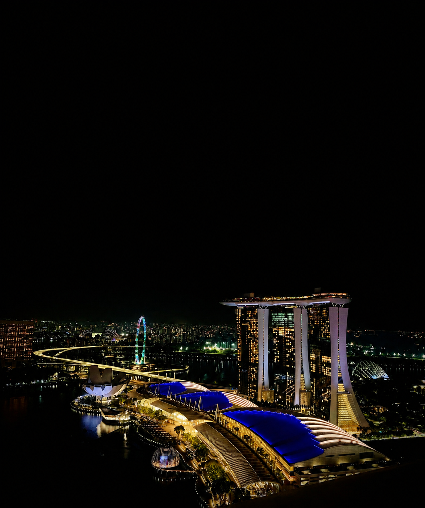
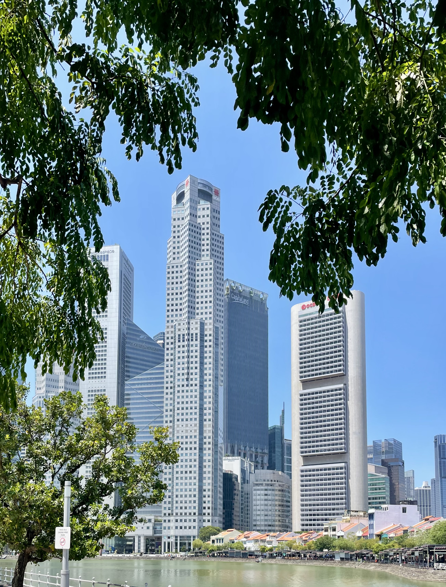
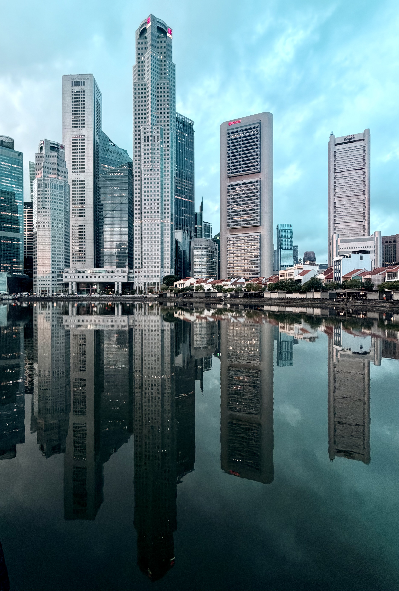
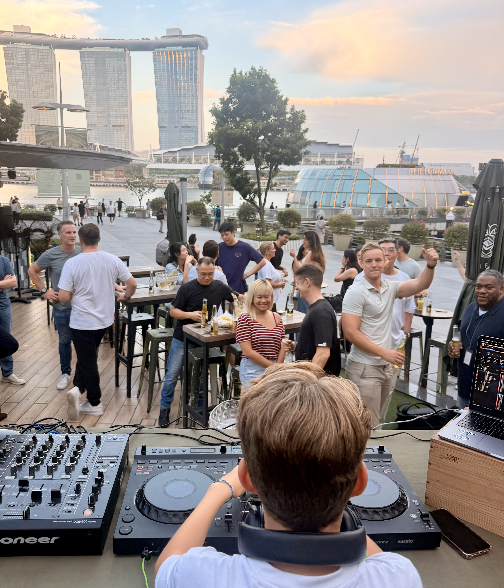

Raffles
The courtyard is one of our favourite places to slow down in the middle of the city. Colonial Singapore, drinks and an atmosphere that never feels rushed.

The Expat Edits · Singapore
Home, somewhere in Asia.
Singapore has been home for us for several years. It is where we work, where the children are growing up, where we run, eat, explore and spend our weekends — and where Changi makes the rest of Asia feel remarkably close.
Our Singapore
Singapore is different for us because we don't arrive here with a departure date. We live here.
That changes the way we see it. The places we return to are as important as the famous sights. A lunchtime run, an old colonial building, a drink at Raffles, a hotel pool, a late afternoon on Sentosa or dinner around Duxton Hill can all become part of an ordinary week.

The city we live in
We spend a lot of time around the city during the week. Work takes us there, lunch often becomes a run, and there is always another building, street or colonial corner worth stopping to look at.


Places we return to
We don't only use hotels when we are travelling. Some of them have become places we return to simply because we enjoy being there.
The courtyard is one of our favourite places to slow down in the middle of the city. Colonial Singapore, drinks and an atmosphere that never feels rushed.
Snacks by the pool, a swim and a game of pool in the bar. It has become somewhere we enjoy spending an afternoon rather than somewhere we simply stay.
The pool bar is relaxed and easy — one of those places where you can settle in for an afternoon without needing much of a plan.
The green city
For all the glass and concrete, some of our favourite parts of Singapore are the places where the city disappears.
We love exploring MacRitchie Reservoir, the Botanic Gardens and Fort Canning Park, and seeing how much wildlife exists alongside everyday city life.


Marina Bay
Marina Bay is one of those parts of Singapore that can still feel special even when you know it well. There are plenty of places to stop for a drink, watch the skyline change and let the evening begin.

The city can be remarkably colourful in daylight.



Some Singapore evenings are difficult to improve upon.

Eating & drinking
Singapore makes an evening out remarkably easy. There is always another bar, restaurant or street worth exploring.
One of the areas we most often head to for dinner. Plenty of restaurants and bars sit close enough together to keep the evening flexible.
Another favourite for evenings when we want plenty of choice and somewhere lively to wander between dinner and drinks.
A more relaxed setting for eating, drinking and lounging away from the intensity of the CBD.

When friends come to visit
Chinatown and the surrounding streets are great to walk around after dark. We also like taking visiting friends and family here to find local, authentic gifts to take home.

Weekends
We love getting down to Sentosa with the children. The best time for us is usually towards sunset, when the heat begins to ease and the whole island feels a little slower.

Settle into a drink at Tanjong Beach Club, walk along the beach and find somewhere relaxed for something to eat.
Growing up here
Living in Singapore has given our children experiences that go far beyond the trips we take. They have grown up surrounded by a different culture, new opportunities and the confidence to try things that might once have seemed out of reach.
Seeing our son DJ at Marina Bay Sands gave him confidence and created one of those memories that will stay with all of us.

Singapore as a base
One of the great advantages of living here is how easy it is to leave for the weekend. Changi makes travelling around Asia feel remarkably straightforward.

Our Singapore
We wouldn't try to show them everything. We'd show them the Singapore we actually enjoy.
Botanic Gardens, MacRitchie or a walk through one of the city's greener corners.
Orchard, a hotel pool or a slower afternoon away from the heat.
Lantern at Fullerton Bay or somewhere around Marina Bay as the light changes.
Duxton Hill, Amoy Street or Dempsey Hill — depending on the mood.
Chinatown or Marina Bay, then simply wander and see where the night takes you.
The photographs